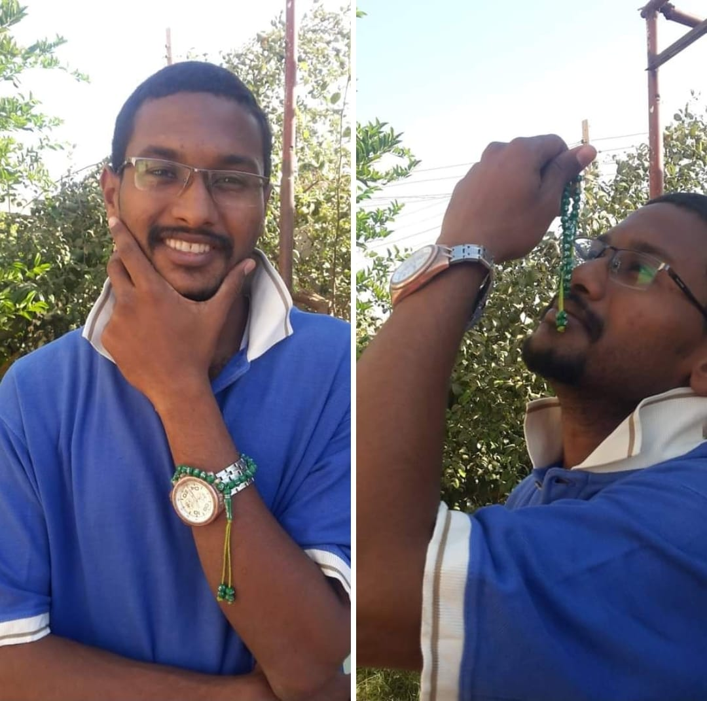

في تقاطع الشرقي
✍️ شرفنتود | 4 صفر(2) 1438هـ | 4-11-2016م
أمس في تقاطع الشرقي الساعة الثامنة والنصف مساء ، وانا ابحلق لانظر الاشارة هل اخضرت وحان قطف ثمارها ام ما زالت حمراء يابسة . . اقصد اشارة المرور !!
يطل علي طفل صغير عمره بين التاسعة و العاشرة (يعني اكبر بقليل من الوقت الذي كنت أقف فيه) الفقرة بين القوسين دي اعتبروا نفسكم ما قريتوها لانو اصلا مافي داعي ليها نهائي وما عارف الدخلها هنا شنو؟! ههخهعهههع
رأيت على وجه هذا الطفل ملامح البؤس ويبدو انه مهموم . . نعم مهموم !! طفل في العاشرة من عمره مهموم بل ويبدوا انه يعول اسرة !!!! . . ملامح وجهه لا تختلف كثيراً عن ملامح وجه ابي عندما يمر بضائقة .. ومن هنا اعتقد انه فعلا يعول اسرة . .
قال لي بنبرة هادئة (يا عم اشتري مني) !!
كان يحمل نوعين من السبح نوع صغير كالتي في يدي واخرى كبيرة ربما تصلح - إضافة للتسبيح بها - أن تعلق في الرقبة !!
الذي جعلني اصنف ان هذا موقف يستحق الاحترام والتقدير ، أثناء تفاوضي معه على السعر ظهر غلمان هم منا ومن بنو جلتنا في سنه او اكبر منه قليلا .. لا تختلف معاناتهم عن معاناته وربما هم اقل منه معاناة .. يختلف شيئ واحد وهو أنهم قالوا لي وبذات النبرة (كرامة لله) !!
اهااا دقيقة .. دقيقة .. تذكرت إختلاف آخر ، معانات الطفل الشامي كانت صادقة نعم صادقة فقد طلب مني الشراء وفي حدقة عيونه طموح عالي ان ينفك من هذا التسول .. هو يبيع لكن يرى في اسلوب بيعه تسول فبؤبؤ عينه كان يعبر عن هذا الحرج الكبيير!!
اما معاناة الطفل الآخر لا أخفيكم لم تحرك فيني ساكناً ،، ربما تبلدت مشاعري لكثرة رؤيتي اليومية إياهم ، لكن الإبتسامة الصفراء أيضاً كانت تؤكد عدم الصدق أو بمعنى أدق هناك دور تمثيلي أو كانه استحلى الأمر !! فـ (كرامة لله) خرجت من فمه باردة وشبه مسطنعة نعم وبالضبط كأنه استحلى الأمر وجعلها مهنة!! ..
الطفل الشامي ظهر لي أنه يريد التخلص من معاناته ويستعيد راحته وعزته المسلوبة ، أما الطفل السوداني تصرفاته وتعابير وجهه دلت لي على أنه آثر ان يكون عبداً ذليلاً لهذا الوضع المُخزي .. ربما نحن بشكل أو بآخر ساهمنا في ما وصل إليه هذا الأخير من تصور عن نفسه وتطلعات مستقبله!!
لا أقصد المقارنة بين الشعوب وليست هدفي في هذا البوست .. ونماذج الكفاح من إخواني السودانيين لا تحصى وبالمقابل هنالك من اخواننا المهاجرين من الشام وغيرها من البلاد أيضا من يسأل الناس إلحافا وهكذا في كل المجتمعات حتى التي تدعي التحضر!! .. لكن في هذه السطور أريد فقط التنفيس عن موقف حرك غطاء قلمي ومن قبله مشاعري ووجداني !!
والمواقف المشرقة من أمثال هؤلاء النفر المهاجرين والتي تستحق الإحترام وحقاً تُحرك المشاعر و الأقلام هي كثيرة وربما تصلح ان تكون كتاب او رواية بعنوان : (من بلاد الظلم والطغيان إلى السودان .. بحثاً عن العدل والأمان) .. وجدت قبل عدة اشهر ايضا طفل ومعه اخته الصغيرة يبيعون (حلاوة مصاصة) في طرمبة بشائر في طريق سوبا غرب !! ومواقف تعامل السودانيين الراقية مع إخوانهم الشوام أيضا لن تكفيها مجلدات !!!
أمثال هؤلاء الباعة . . ان وجدتموهم اشتروا منهم ، هم اخواننا كانوا يعيشون عزيزين مثلنا ومكرمين منعمين لولا طواغيت ملاعين افسدوا عليهم عيشهم !!
صحيح هذه المسبحة قيمتها أقل من 10 جنيه لكنه يحتاج يحتاج إليها وزيادة فهو على شفا حرف هار من التسول .. فاشتروا منهم حتى لا يقعوا فيه !!
هم إخواننا تجمعنا هُوية واحدة .. هوية - بضم الهاء - لا تعني السودانوية او المصراوية اوالشاموية لا لا لا كل هذه مجرد تفاصيل وجدنا آبائنا عليها وهم كذلك وجدوا آبائهم عليها ، الأوطان جميلة ونحبها إلا أنها مهما بلغت في النفوس فلن تتجاوز كونها تراب!!
الوطن يعظم أكثر في النفس عندما نعيش فيه وفق مفاهيمنا و تصوراتنا عن الكون والإنسان والحياة التي يتولد عنها قيمنا الذاتية وسلوكنا مع الغير!!
المفاهيم المركزية التي تعزز فينا حب الوطن يجب أن تجيب على سؤال من أين جئنا نحن كبشر ؟! وإلى أين سنذهب؟! وكيف يجب ان نعيش في هذا الوطن؟! هذه الأسئلة لن تجيب عليها السودانوية او الدنقلاوية او الفلاتية او المصراوية أو أو أو من أسماء التراب .. سيجيب عليها شيئ واحد هي مفاهيمنا العقائدية تُجاه الوجود ككل ، وهي وحدها فقط التي تستطيع أن تفسر ذلك وتجيب عليه !!!
اشتروا منهم ومن جميع الباعة المتجولين بغض النظر عن أصلهم فهذه فئة على محك أن يصبحوا متسولين . . فالنشد من أيديهم . .
اشتروا منهم فسوبر ماركت الحكمة أو التسامح لن يغتنوا من جنيهات مناديل الورق لكنها ستُحدث فارق لهؤلاء . .
اشتروا منهم المزهريات والكبابي ولعب الأطفال . . حولوا منهم الرصيد واشتروا منهم الإسكراتشات .. اشتروا منهم المياه الباردة .. هم يتصببون عرقاً في شارع الجمهورية والبلدية ليحتفظوا ببرودتها ليحصلوا على فرق سعر ربما جنيه واحد!!
اشتروا منهم كل احتياجاتكم التي يمكن أن تجدونها عندهم .. واحتسبو فرق السعر صدقة!!
صحيح المسؤولية اكبر من ان نشتري منهم وحوجتهم تتجاوز كل بضاعتهم .. لكن لا يكلف الله نفسا الا وسعها افعلوا لهم ما تستطيعوا ان تفعلوه .. وان لم تجدوا اي شيئ ابتسموا في وجوههم .. تخففوا عنهم وتتصدقوا لأنفسكم !!
المشهد الأكثر دراماتيتاً . . بعد حوالي ساعتين من موقفي مع هذا الطفل الشامي وتقريباً الساعة 10 ونص وأنا راجع من أمدرمان حيث كانت وجهتي وبالتحديد عند إشارة مرور تقاطع مسجد الشهيد مع شارع النيل لمحت فتاة عشرينية تتجول بين العربات تحمل ذات النوعية من المسابح التي كانت عند ذلك الطفل الشامي في تقاطع الشرقي ، نعم نفس النوعية متأكد أنها نفس النوعية (كلتيهما الحبات منقوش عليها "الله" في جانب و"محمد" في الجانب الآخر ، وذيل المسبحة منقوش عليه "لا إله إلا الله" في جانب و "ومحمد رسول الله" في الجانب الآخر).. الم أقل لكم هم إخواننا تجمعنا هُوية واحدة!!!
الإشارة اخضرت سريعاً ولم اتمكن من التحدث إليها .. لكنها تشبهه وكأنها أخته بل أجزم أنها أخته أو قريبته ، واعتقد أن المسابح تصنعها أمهم التي أنهكها طول السفر أو أبوهم المقعد ربما بسبب رصاصة خرجت من بندقية نصيري حاقد اخترقت نخاعه الشوكي ، أو أخيهم الصغير الذي سقط الجدار على قدميه بسبب القصف الروسي أو السعودي أو التركي أوأو أو لا تهم الأسماء فجميعهم أوغاد!!! . .
عند هذه اللحظة بالذات لحظة رؤيتي للفتاة واستنتاجي انها قريبة ذلك الطفل وربما معهم آخرين في البيت يصنعون وينتجون وهم يقومون بالبيع والتسويق للحصول على لقمة عيش كريمة ، غمرني شعور غزير أن هؤلاء القوم حقاً أحرار ، وحقاً أكثر أنهم مظلومين .. وسيخلد التاريخ كثيييير كثييير جدا من قصص هم أبطالها عنواناتها (كفاح X كفاح) . .
اللهم انت العون لا عون سواك اللهم كن عوناً لإخوان لنا ضاقت بهم الأرض في العراق والشام وغيرها من البلاد غزاها عرب وعجم حمقُ لا دين لهم غير الخراب والدمار .. هم استجابوا لأمرك ( الم تكن أرض الله واسعة فتهاجروا فيها ) فهاجروا . . .
ونسألك اللهم أن تنصر اخواننا المجاهدين في تلكم البلاد فهم أيضاً استجابوا لأمرك (وقاتلوا في سبيل الله الذين يقاتلونكم).. اللهم إنهم يقاتلون من أجل أن تكون كلمتك هي العليا .. ومن أجل ان يكون الدين كله لك!! ، هم يقاتلون من اجل ان تُعبد وحدك!! .. و من أجل إخراج البشيرة من ضيق العصبيات والطائفيات إلى سعة جماعة المسلمين ،، ومن ظلم الأمم المتحدة إلى عدل خلافة على منهاج النبوة . .
اللهم انصر المستضعفين في كل مكان ، وعليك اللهم بالظالمين ومن عاونهم اينما حلوا وارتحلوا يا قوي يا عزيز يا جبار يا منتقم .. انت وحدك يا الله !!
في هذا الصباح أمسكت بمسبحة صغيري الشامي وقربتها إلى انفي ، شممت فيها رائحة خشب وايضا رائحة عزة وشرف وإباء ونضال ، سأجعلها ضمن اكسسوراتي و سألبسها مع ساعتي ، إن رأيتموني ارتديها فهذه هي قصتها !!